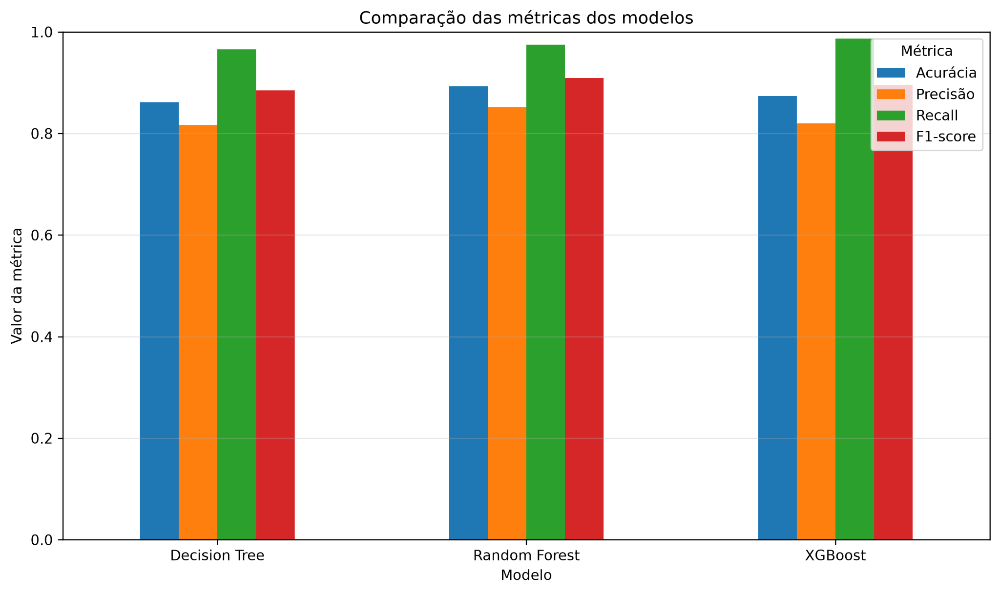
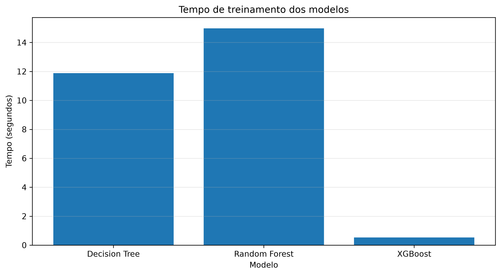
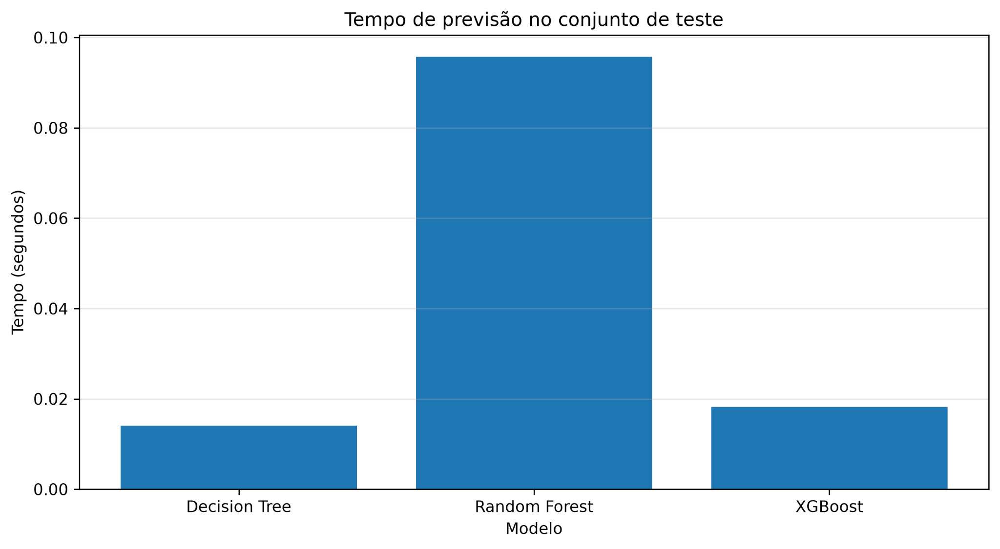
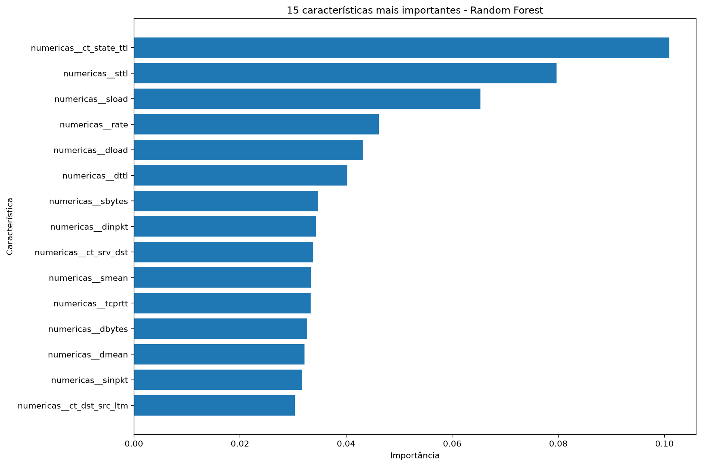
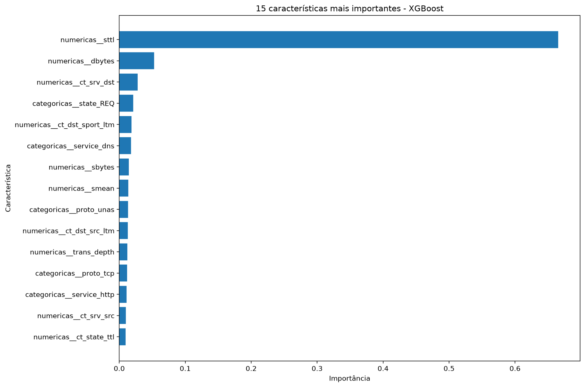

Tráfego normal
Comunicações legítimas que devem continuar circulando sem serem confundidas com ameaças.
Classe 0Uma análise comparativa de Decision Tree, Random Forest e XGBoost na identificação de tráfego malicioso usando o conjunto de dados UNSW-NB15.
Um detector precisa reconhecer tráfego malicioso sem gerar tantos alarmes incorretos que a equipe de segurança deixe de confiar nele.
Comunicações legítimas que devem continuar circulando sem serem confundidas com ameaças.
Classe 0Registros associados a ataques que o modelo deve identificar para reduzir ameaças não detectadas.
Classe 1Recall alto ajuda a encontrar ataques; precisão ajuda a evitar alarmes falsos. O custo de cada erro importa.
AvaliaçãoComo Decision Tree, Random Forest e XGBoost se comparam na identificação de tráfego de rede malicioso, considerando desempenho de classificação, tempo de execução e interpretabilidade?
Os modelos foram treinados com o conjunto oficial de treinamento e avaliados no conjunto oficial de teste do UNSW-NB15.
Aprende regras de decisão em sequência. É relativamente fácil de visualizar e explicar, mas pode sobreajustar os dados.
Combina várias árvores treinadas com amostras e subconjuntos de características, agregando suas previsões.
Constrói árvores sequencialmente, buscando corrigir erros do conjunto de árvores já construído.
Nota metodológica: os modelos compartilham os conjuntos de dados e o pré-processamento, mas as configurações de ponderação das classes não são idênticas e não houve busca sistemática de hiperparâmetros. Os tempos são medições de uma execução e podem variar entre máquinas e execuções.
O Random Forest obteve o melhor equilíbrio geral. O XGBoost identificou a maior proporção de ataques, mas gerou mais falsos positivos.
Maior acurácia, precisão e F1-score entre os modelos avaliados.
| Modelo | Acurácia | Precisão | Recall | F1-score | Treino | Previsão* |
|---|---|---|---|---|---|---|
| Decision Tree | 86,17% | 81,68% | 96,53% | 88,49% | 11,88 s | 0,0141 s |
| Random Forest TOP F1 | 89,29% | 85,19% | 97,51% | 90,93% | 14,98 s | 0,0957 s |
| XGBoost | 87,34% | 81,98% | 98,70% | 89,57% | 0,54 s | 0,0183 s |
* Tempo de previsão medido para o conjunto de teste inteiro (82.332 registros), não por registro individual. Os tempos são observações de uma execução.



Falso negativo: ataque classificado como normal. Falso positivo: tráfego normal sinalizado como ataque.
O compromisso: em comparação ao Random Forest, o XGBoost deixou passar 539 ataques a menos, mas produziu 2.149 falsos positivos a mais. A escolha depende do custo operacional de cada tipo de erro.
A importância das características ajuda a investigar quais variáveis foram úteis para os modelos. Ela não demonstra causalidade e não explica sozinha cada previsão.


Os valores de importância são calculados de forma diferente conforme o modelo. Portanto, não devem ser comparados diretamente como se estivessem na mesma escala, nem interpretados como prova de que uma característica causa um ataque.
Os resultados indicam que o melhor algoritmo depende das prioridades do sistema de detecção e do custo associado aos erros.
Quando o objetivo é um equilíbrio entre acurácia, precisão, recall e F1-score.
Quando reduzir ataques não detectados é uma prioridade, aceitando investigar mais alarmes falsos.
Quando a transparência das decisões é especialmente importante.
Os resultados refletem um conjunto de dados público e uma configuração experimental específica. Trabalhos futuros podem incluir ajuste sistemático de hiperparâmetros, validação cruzada, avaliação em outros conjuntos de dados e análise de desempenho em cenários próximos ao uso real.
O arquivo Markdown original está incluído no projeto para leitura, revisão e futuras atualizações. A página foi organizada a partir desse documento e dos resultados do experimento.
Trabalho desenvolvido na disciplina de Estrutura de Dados II, no Centro Universitário Braz Cubas, sob orientação da Profa. Dra. Andréa Ono Sakai.